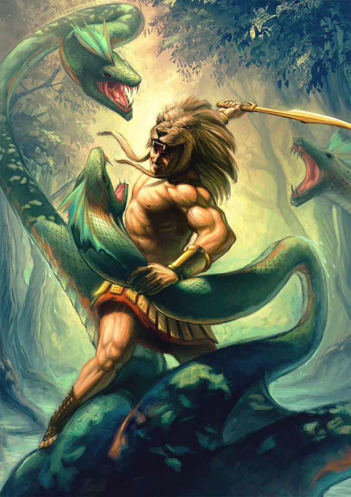
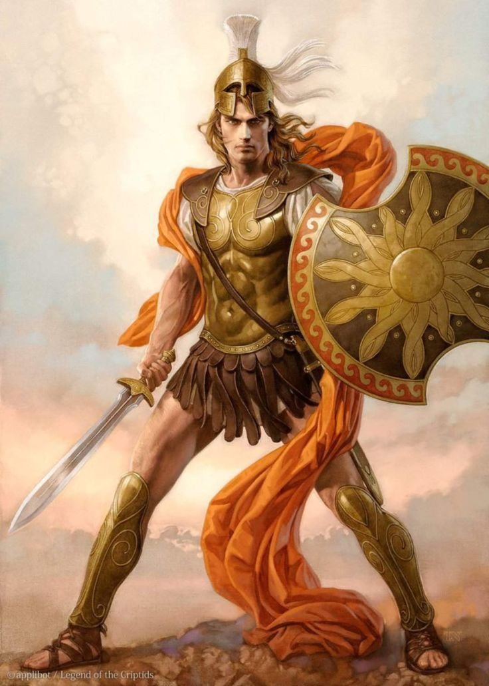
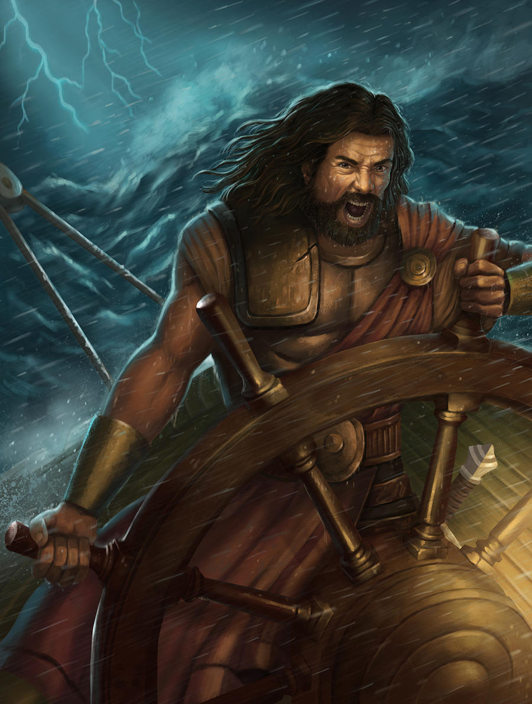
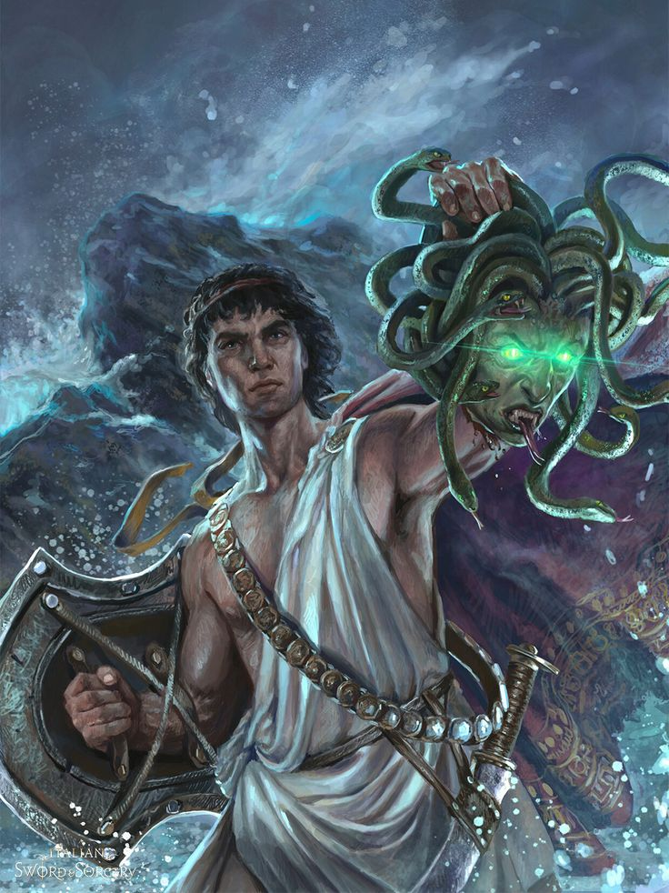
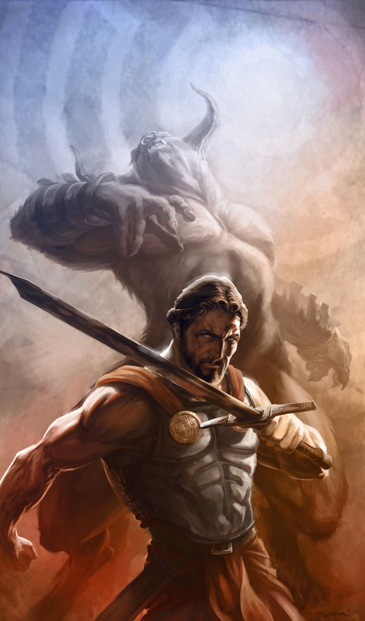
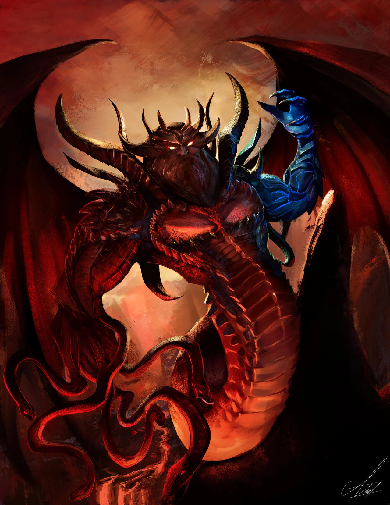
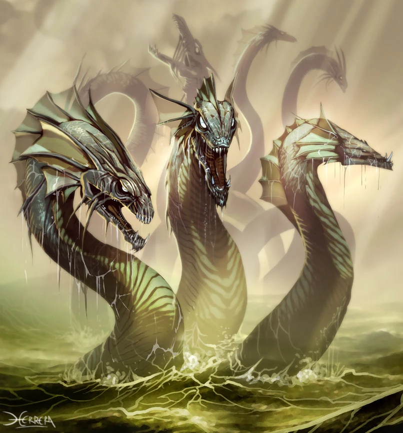
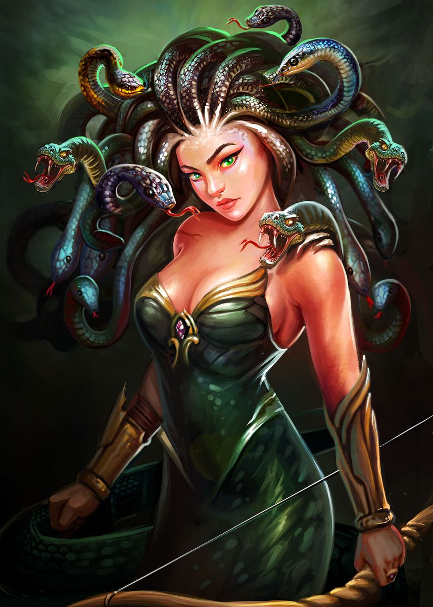
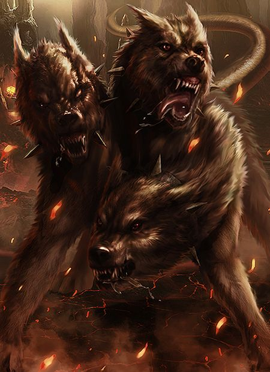
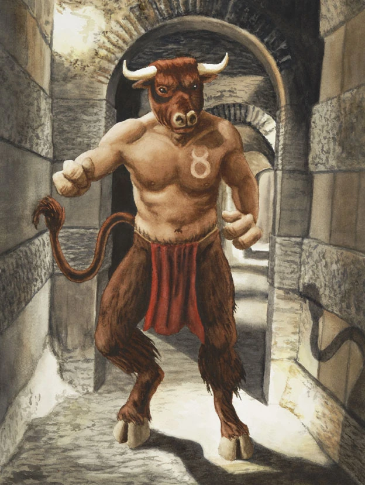

Heracles is a Greek hero known for his incredible strength and for completing the Twelve Labors, a series of nearly impossible tasks. He represents endurance, courage, and the ability to overcome challenges.


Achilles was the greatest warrior in the Trojan War, known for his speed and near-invincibility. His only vulnerability was his heel, which eventually led to his downfall.
Odysseus was a clever Greek hero famous for his intelligence and creative problem-solving, such as devising the Trojan Horse. His long journey home after the Trojan War is told in The Odyssey.


Perseus is known for slaying the Gorgon Medusa using wit and magical tools given by the gods. He later saved the princess Andromeda from a sea monster.
Theseus was a hero celebrated for his bravery and leadership, eventually becoming king of Athens. He is best known for navigating the Labyrinth and defeating the Minotaur.


Typhon was a massive and terrifying creature considered one of the deadliest beings in Greek mythology. He challenged the gods themselves and was ultimately defeated by Zeus.
The Hydra was a serpent-like monster with multiple heads, and when one was cut off, two more grew back. It was defeated by Heracles as one of his Twelve Labors.


Medusa was one of the Gorgons, a woman cursed with snakes for hair whose gaze could turn people to stone. Perseus defeated her by using a reflective shield to avoid looking directly at her.
Cerberus is the three-headed dog that guards the entrance to the Underworld, preventing the dead from leaving. Though fearsome, he is loyal to Hades and serves as a protector rather than a predator.


The Minotaur was a creature with the body of a man and the head of a bull, kept in a labyrinth designed so no one could escape. Theseus defeated the creature with the help of Ariadne, who gave him a way to navigate the maze.